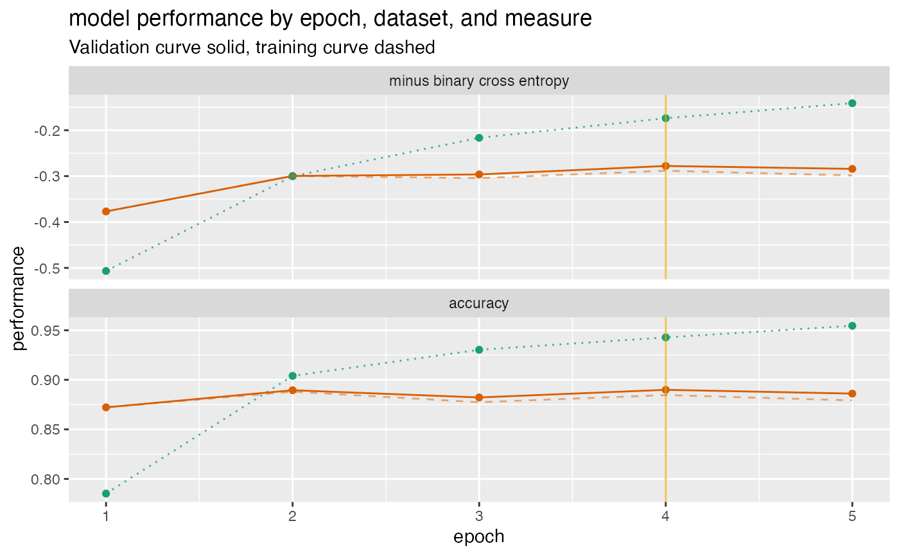

Plot a history of model fit performance over the a trajectory of times.
plot_fit_trajectory( d, column_description, title, ..., epoch_name = "epoch", needs_flip = c(), pick_metric = NULL, discount_rate = NULL, draw_ribbon = FALSE, draw_segments = FALSE, val_color = "#d95f02", train_color = "#1b9e77", pick_color = "#e6ab02" )
| d | data frame to get values from. |
|---|---|
| column_description | description of column measures (data.frame with columns measure, validation, and training). |
| title | character title for plot. |
| ... | force later arguments to be bound by name |
| epoch_name | name for epoch or trajectory column. |
| needs_flip | character array of measures that need to be flipped. |
| pick_metric | character metric to maximize. |
| discount_rate | numeric what fraction of over-fit to subtract from validation performance. |
| draw_ribbon | present the difference in training and validation performance as a ribbon rather than two curves? (default FALSE) |
| draw_segments | logical if TRUE draw over-fit/under-fit segments. |
| val_color | color for validation performance curve |
| train_color | color for training performance curve |
| pick_color | color for indicating optimal stopping point |
ggplot2 plot
This visualization can be applied to any staged machine learning algorithm. For example one could plot the performance of a gradient boosting machine as a function of the number of trees added. The fit history data should be in the form given in the example below.
The example below gives a fit plot for a history report from Keras R package. Please see http://www.win-vector.com/blog/2017/12/plotting-deep-learning-model-performance-trajectories/ for some examples and details.
d <- data.frame( epoch = c(1, 2, 3, 4, 5), val_loss = c(0.3769818, 0.2996994, 0.2963943, 0.2779052, 0.2842501), val_acc = c(0.8722000, 0.8895000, 0.8822000, 0.8899000, 0.8861000), loss = c(0.5067290, 0.3002033, 0.2165675, 0.1738829, 0.1410933), acc = c(0.7852000, 0.9040000, 0.9303333, 0.9428000, 0.9545333) ) cT <- data.frame( measure = c("minus binary cross entropy", "accuracy"), training = c("loss", "acc"), validation = c("val_loss", "val_acc"), stringsAsFactors = FALSE) plt <- plot_fit_trajectory( d, column_description = cT, needs_flip = "minus binary cross entropy", title = "model performance by epoch, dataset, and measure", epoch_name = "epoch", pick_metric = "minus binary cross entropy", discount_rate = 0.1) suppressWarnings(print(plt)) # too few points for loess